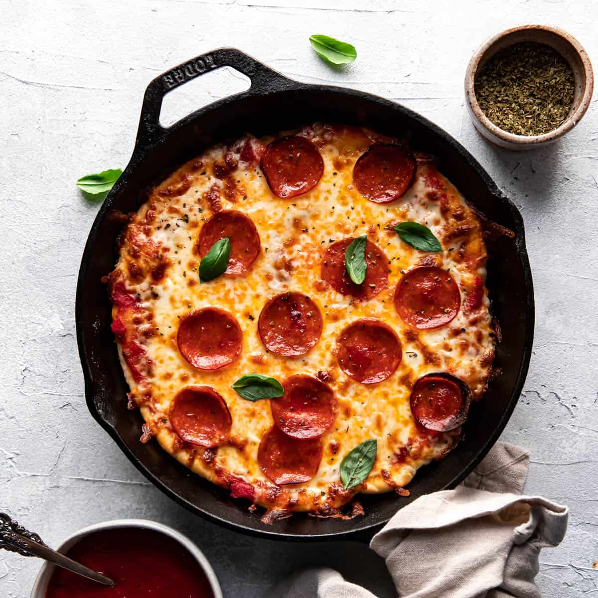

Cast Iron Steak

This recipe is a great option to make pizza from home. It adds a different taste then traditionallly only cooking
in the oven. It does reaquire a cast iron skillet. It is a great recipe for those looking to make delicious pizza form home.
Ingredients
- 1 pizza dough ball
- 4-6 tablespoons olive oil + more if needed
- 16 ounces mozzarella chees, grated
- 1 package pepperonis
- dried oregano
Steps
- Preheat oven to 500.
- Heat the cast iron skillet on a stovetop over medium heat.
- Add olive oil to cover the bottom of the skillet.
- Flatten dough until it is slighly bigger than the skillet.
- Place the dough in the skillet and cook until it bubbles up.
- Use a spatual to check bottom until is is a light golden color.
- Add toppings through out the skillet, starting with the pizza sauce, followed by the cheese
and pepperonis.
- ank in the oven until the cheese is completely melted, swith oven to broil for about 2-3 minutes.
- Carefully remove pizza and place it on a cutting board.
- Sprinkle oregano on top. Serve and enjoy!